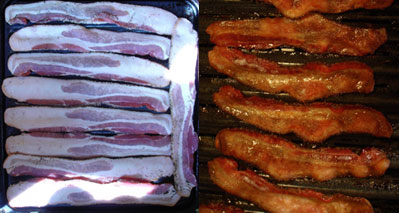
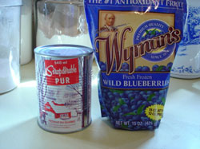
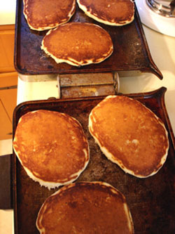

A nice mid-week supper
Lindy’s recent post about eating pancakes inspired tonight’s menu: blueberry buttermilk pancakes, peppered bacon, and homemade applesauce. I think this is a nice mid-week supper to enjoy every once in awhile. I’m not going to give any recipes here, but I have a few photos and a couple of things to talk about.
For instance, did you kids know that if you want to cook a lot of bacon at once it’s much easier to put it on your broiler pan and cook it in the oven at about 350º for about 20 minutes? Then you don’t have to stand over a frying pan at the stove, turning bacon, and spattering grease everywhere. Here are some photos.

And furthermore, do you realize how easy it is to make your own applesauce, and how much better it is than any applesauce you can buy in the store? That’s because they squeeze the juice out of the apples first and bottle it, then make sauce out of the tasteless pulp, replacing the flavor with sugar and the juice with water. To make your own you need a food mill, which is a very inexpensive piece of kitchen equipment. Cut washed apples in half, without peeling or coring, and simmer with just a tiny bit of water on the bottom of a saucepan until they are tender. Put them through the food mill and there you are. Most times all you will need to add is a little cinnamon unless you like it really sweet. I usually use a combination of golden delicious and macintosh, but you can try different varieties and see what you like best.

I like to keep some of these Wyman’s wild blueberries in the freezer; they are really tasty and elevate plain old pancakes to something a little special. They don’t need to be defrosted before sprinkling on top of the pancakes after you pour them on the griddle. We brought back about 10 cans of this maple syrup from a farm outside of Montreal last summer, including some special dark syrup I have been using for baking.

And lastly, I’m so lucky to have found this big electric griddle at a rummage sale several years ago for about $3.00. It’s just like one my mother used when we were kids, and one of my most useful kitchen appliances. It has detachable waffle irons, can cook 8 pancakes at once, and the hinges slide so that you can grill 4 sandwiches at a time on both sides at once, kind of like a panini grill—in fact, it is the prototype of the panini grill although of course we didn’t know that back in the 50’s.
Comments
Yum! That is a spectacularly good supper.
Wow- that griddle is bigger than my whole kitchen.
That looks like The Best Dinner Ever. I would have given my eyeteeth to have had that for dinner last night (reminds me of a school year spent in New Jersey where school lunch was sometimes a stack of pancakes with syrup – weird but tasty!) Your pancakes look splendid – like out of a magazine! And I’m a huge Wyman’s fan. I try to keep a bag of those berries in my freezer at all times, but don’t make nearly enough pancakes with them. The griddle sounds amazing – I’ll have to keep my eyes peeled for one.
Ah … where do I begin?
The pancakes … the bacon … it’s all so glorious!
I guess you don’t remember when I almost set the house on fire cooking bacon in the oven at about your 5th or 6th birthday party! Maybe I had it in the broiler. It caught on fire, went up the wall to catch the calendar on fire.
Lee Yackel and I saved the day by throwing baking soda all over everything. At least we saved the house! Not the bacon.
Cake, ice cream, …and bacon? Not your typical birthday party menu for 5 or 6 year olds.
Breakfast for dinner is one of the things I miss the most about living at home.
Of course it wasn’t your typical birthday party! Were you a typical 5 or 6 year old?
Add a comment